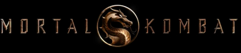

2021
боевик, фэнтези, фантастика
США
18+
Продолжение легендарного фильма из 90-х. Предстоит по-настоящему смертельная битва, где останется только сильнейший
Продолжение легендарного фильма из 90-х. Предстоит по-настоящему смертельная битва, где останется только сильнейший
Боец смешанных единоборств Коул Янг не раз соглашался проиграть за деньги. Он не знает о своем наследии и почему император Внешнего Мира Шан Цзун посылает своего лучшего воина, могущественного криомансера Саб-Зиро, на охоту за Коулом. Янг боится за безопасность своей семьи, и майор спецназа Джакс, обладатель такой же отметки в виде дракона, как и у Коула, советует ему отправиться на поиски Сони Блейд. Вскоре он оказывается в храме Лорда Рейдена, Старшего Бога и защитника Земного Царства, который дает убежище тем, кто носит метку. Здесь Коул тренируется с опытными воинами Лю Каном, Кун Лао и наемником-изгоем Кано, готовясь вместе с величайшими чемпионами Земли противостоять врагам из Внешнего Мира в битве за вселенную. Но сможет ли Коул приложить все усилия и раскрыть в себе аркану — могущественную силу его души, чтобы не только спасти свою семью, но и остановить Внешний Мир раз и навсегда?